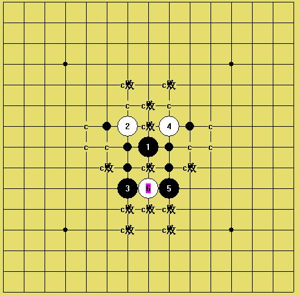

关于岚月6之后7的应对
#1 关于岚月6之后7的应对作者：撒蓉儿 发表时间：2009-7-2 11:56:27
=======上图对应的爱五子棋谱代码如下，以便你拆解：========
h8i9i6g9g6h6
======================================================
请老师们提供一个强的7，谢谢~~~~~~
［ 茗弈小刀 于 2009-7-2 19:28:21 时花20金币送鲜花一朵］
#2 Re:关于岚月6之后7的应对作者：撒蓉儿 发表时间：2009-7-2 11:58:45
=======上图对应的爱五子棋谱代码如下，以便你拆解：========
h8i9i6g9g6h6g4
======================================================
=======上图对应的爱五子棋谱代码如下，以便你拆解：========
h8i9i6g9g6h6g7
======================================================
=======上图对应的爱五子棋谱代码如下，以便你拆解：========
h8i9i6g9g6h6f9
======================================================
=======上图对应的爱五子棋谱代码如下，以便你拆解：========
h8i9i6g9g6h6j7
======================================================
=======上图对应的爱五子棋谱代码如下，以便你拆解：========
h8i9i6g9g6h6i8
======================================================
诸多的7哪个最强呢？
#3 Re:关于岚月6之后7的应对作者：一千次回眸 发表时间：2009-7-2 12:30:33
这个请自来水老师来回答吧，我也不太懂。白6看似老实其实最佳。#4 Re:关于岚月6之后7的应对作者：安娜制作所 发表时间：2009-7-2 12:58:09
=======上图对应的爱五子棋谱代码如下，以便你拆解：========
h8i9i6g9g6h6h9
======================================================这个7怎么样?
#5 Re:关于岚月6之后7的应对作者：自来水 发表时间：2009-7-2 12:59:38
...蓉儿你这是岚月几打了 能否踏实一点
能否踏实一点
我两打还没吃透,你都跑四打去了...
没拆过,问你姐姐
#6 Re:关于岚月6之后7的应对作者：撒蓉儿 发表时间：2009-7-2 13:16:51
=======上图对应的爱五子棋谱代码如下，以便你拆解：========
h8i9i6g9g6h6h9h10
======================================================娜娜这个7是败的
#7 Re:关于岚月6之后7的应对作者：自来水 发表时间：2009-7-2 13:17:12
=======上图对应的爱五子棋谱代码如下，以便你拆解：========
h8i9i6g9g6h6f9
======================================================
=======上图对应的爱五子棋谱代码如下，以便你拆解：========
h8i9i6g9g6h6g7
======================================================
这两个七还能下下,第一个好一些
其他7不好,4L这个黑7非常糟...
［ 撒蓉儿 于 2009-7-2 13:41:35 时花20金币送鲜花一朵］
#8 Re:关于岚月6之后7的应对作者：撒蓉儿 发表时间：2009-7-2 13:39:47
=======上图对应的爱五子棋谱代码如下，以便你拆解：========
h8i9i6g9g6h6f9f8h10h9g7i10
======================================================谢谢水水老师哈~~~~~~这个应该是最强吧，杀起来要费一番周折了
#9 Re:关于岚月6之后7的应对作者：自来水 发表时间：2009-7-2 14:19:18
...#10 Re:关于岚月6之后7的应对作者：安娜制作所 发表时间：2009-7-2 14:39:17
=======上图对应的爱五子棋谱代码如下，以便你拆解：========
h8i9i6g9g6h6h9h10g11i11j12i10i8g10f10j10k10h12g13h11i12
======================================================这样应法怎么样?
#11 Re:关于岚月6之后7的应对作者：撒蓉儿 发表时间：2009-7-2 15:30:49
=======上图对应的爱五子棋谱代码如下，以便你拆解：========
h8i9i6g9g6h6h9h10g11k9
======================================================10这样下
#12 Re:关于岚月6之后7的应对作者：自来水 发表时间：2009-7-2 15:37:35
=======上图对应的爱五子棋谱代码如下，以便你拆解：========
h8i9i6g9g6h6h9h10g11f8
======================================================
LS这个也可以
#13 Re:关于岚月6之后7的应对作者：小天元子 发表时间：2009-7-2 17:09:53
=======上图对应的爱五子棋谱代码如下，以便你拆解：========
h8i9i6g9g6h6h10
======================================================
好冷的7，白怎么胜呢？
#14 Re:Re:关于岚月6之后7的应对作者：江南新绿 发表时间：2009-7-2 18:01:45
=======上图对应的爱五子棋谱代码如下，以便你拆解：========
h8i9i6g9g6h6h10h9j9e9f9g7d10i5f8g10j8g8g11f7e6j7i8h7i7h4h5j4k3i4k4j6
======================================================
 岚月7.rar
岚月7.rar#15 Re:关于岚月6之后7的应对作者：茗弈小刀 发表时间：2009-7-2 19:34:55
娜娜总是出乎意料！
这个岚月我还没研究，如问我，那我也只能问水弟弟了。
#16 Re:关于岚月6之后7的应对作者：自来水 发表时间：2009-7-2 20:03:37
。。。。。。。 。。。
。。。
LS怎么可以这样，我还指望你呢
#17 Re:Re:关于岚月6之后7的应对作者：小天元子 发表时间：2009-7-2 21:15:31

谢谢新绿LS的解答，下午网断了，现在才来看信息，据说这个7唯一，还有2个7还没杀出来
#18 Re:关于岚月6之后7的应对作者：小天元子 发表时间：2009-7-2 21:19:04
=======上图对应的爱五子棋谱代码如下，以便你拆解：========
h8i9i6g9g6h6h10h9j9e9f9g7d10i5f8g10j8g8g11f7e6j7i8h7i7h4
======================================================
下午拆到这里就放弃了，直接上来等饼了，看来还是这路正解
#19 Re:关于岚月6之后7的应对作者：行云流水 发表时间：2009-7-2 23:05:39
=======上图对应的爱五子棋谱代码如下，以便你拆解：========
h8i9i6g9g6h6j9
======================================================
［ 茗弈小刀 于 2009-7-3 9:45:10 时花20金币送鲜花一朵］
#20 Re:关于岚月6之后7的应对作者：小天元子 发表时间：2009-7-2 23:07:07
恩，听说LS顾LS这个7唯一#21 Re:关于岚月6之后7的应对作者：茗弈雨 发表时间：2009-7-3 9:43:12
谢谢顾老师指点！
#22 Re:关于岚月6之后7的应对作者：安娜制作所 发表时间：2009-7-3 10:42:56
答11楼| 撒蓉儿 |
=======上图对应的爱五子棋谱代码如下，以便你拆解：========
h8i9i6g9g6h6h9h10g11k9i11j8i7k7l6k8k10
======================================================
［ 撒蓉儿 于 2009-7-5 19:26:05 时花20金币送鲜花一朵］
#23 Re:关于岚月6之后7的应对作者：小天元子 发表时间：2009-7-3 10:59:06
这个7的唯一基本可以确认了，就这个7有生命力，其他2个7虽然未严格地毯，却是相当被动的说
#24 Re:关于岚月6之后7的应对作者：安娜制作所 发表时间：2009-7-3 11:10:10
嗯,自几拆一下感觉就是不一样! 有了结论还是要知其所以然!!
#25 Re:关于岚月6之后7的应对作者：撒蓉儿 发表时间：2009-7-5 18:28:25
这几天太忙于考试，没有及时回帖，抱歉！首先谢谢新绿老师~谢谢顾老师，在这里问下各位老师这个之后7有没有可能地毯，如果没有蓉儿就不拆了，至今还有好几个点没拆出来，郁闷~~
=======上图对应的爱五子棋谱代码如下，以便你拆解：========
h8i9i6g9g6h6
======================================================
这个6是前些时候跟一室友玩儿的时候，她走出这个6，当时看上去这个6是很被动的防守，心里暗暗的沾沾自喜，认为她输定了，今天才知道这个6是唯一的最强的防守，最最郁闷的是最终还是没有杀出来，所以才发此贴请教各位老师！！！
#26 Re:关于岚月6之后7的应对作者：撒蓉儿 发表时间：2009-7-5 18:29:24
=======上图对应的爱五子棋谱代码如下，以便你拆解：========
h8i9i6g9g6h6j7h9f9i7k9h5h7g8j9i8i10g10g11k8
======================================================这个黑如何杀？
#27 Re:关于岚月6之后7的应对作者：撒蓉儿 发表时间：2009-7-5 18:33:29
=======上图对应的爱五子棋谱代码如下，以便你拆解：========
h8i9i6g9g6h6f9g8g10f7
======================================================
这个10应该是最强吧